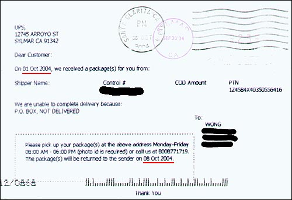
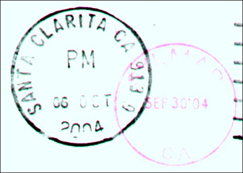

Why the United Parcel Service SucksOctober 12, 2004
This is incredibly irritating.
I just checked my mail yesterday and received a postcard from the United Parcel Service (UPS). I have underlined the two important dates
in
red.
 Here is a blowup of the postmarks. Note the double postmark dates.
 This postcard is confusing. First, UPS claims to have received a package for me on Oct 1, 2004 yet the first postmark (in red) is Sep 30, 2004! Huh? How did they know to mail a postcard to me before the package has arrived?! OK, maybe the postcard is prepaid and the red postmark is not valid. So why did UPS wait FIVE days (from Oct 1 to Oct 6) to send me a postcard? Second, UPS says they will hold the package for me until Oct 8, 2004 but the second postmark (in black) tells me they mailed the postcard on Oct 6, 2004. That does not give me very much time to respond even assuming the postcard gets delivered the next day! I received this postcard on Oct 11, 2004. I called UPS and found unsurprisingly they sent the package back. They could only tell me the sending company name but not the return address. And they do not collect the phone number of the sending party so I cannot even call them. They also have no explanation why the postcard was mailed so late. The sad part is this is not the first time UPS has screwed me out of a package. Needless to say, I do not use UPS when mailing packages and do not recommend UPS to any of my friends or business associates. |
| My Writings |
Last updated : October 12, 2004
Copyright 2004 Al Wong, Los Angeles, California, USA